Votre semaine, organisée
- Les macros dans votre journal du jour (version 2.6)Protéines, glucides et lipides sont comptés pour chaque saisie du journal : photo de l’assiette, code-barres, repas prévu, aliment de la liste et saisie à la main, où vous pouvez les indiquer si vous le souhaitez. À côté des calories du jour, le Journal du jour affiche les protéines, les glucides et les lipides du jour, avec la part de chacun dans l’énergie apportée par les trois. Si une saisie n’indique pas ses macronutriments, par exemple une saisie faite avec une version précédente, l’app précise que les totaux sont partiels. Ce sont des estimations, pas un avis médical.
- Shaker de whey (version 2.6)Enregistrez votre poudre une fois, avec les valeurs par dose recopiées de son étiquette : poids de la dose, énergie, protéines, glucides et lipides. L’app ne propose aucune valeur par défaut. Ajoutez ensuite un shaker depuis le Journal du jour : choisissez le nombre de doses, puis de l’eau, du lait demi-écrémé ou une boisson au soja non sucrée, et son volume. Le shaker compte dans les calories et les macros du jour. Les valeurs du lait et de la boisson au soja sont des valeurs moyennes intégrées à l’app, et vos produits restent sur votre iPhone.
- Un nouveau design et une nouvelle icône (version 2.6)Surfaces plus claires, cartes et boutons en relief, choix plus lisibles, et une nouvelle icône : un renard au chapeau bleu nuit, son carnet à la main. L’app est aussi plus simple : recherche native des recettes, menus au toucher long sur les repas et les recettes, glisser pour cocher un article ou supprimer une saisie, tâches courtes en feuilles et retours haptiques aux moments clés. Les grandes tailles de texte sont prises en charge sur plus d’écrans, et « Réduire les animations » est respecté partout. Dans Objectifs, des étapes plus claires aident à activer la lecture des pas quand aucun pas n’est trouvé.
- Des calories à partir d’une photo de l’assiette (version 2.5)Prenez votre assiette en photo : l’intelligence artificielle intégrée à votre iPhone reconnaît les aliments et estime les quantités et les calories, sur l’appareil. La photo n’est ni enregistrée ni envoyée. Ajoutez le résultat à votre journal du jour. 3 analyses sont offertes ; ensuite, l’analyse de la photo de l’assiette fait partie de Premium. Il faut un iPhone compatible avec l’intelligence artificielle intégrée, sous iOS 27 ou plus récent, avec cette fonction activée ; tout le reste fonctionne sans elle. Le résultat est une estimation approximative, qui peut être très éloignée de votre assiette : l’huile, le beurre, la crème et les sauces sont souvent invisibles sur une photo ; vérifiez chaque aliment et chaque quantité, et ajoutez ce qui manque.
- Votre journal du jour (version 2.5)Gardez la trace de ce que vous mangez chaque jour et voyez le total de calories d’un coup d’œil ; depuis la version 2.6, les protéines, glucides et lipides aussi. Votre journal reste sur votre iPhone.
- Calculateur de calories (version 2.5, gratuit)Dans Objectifs, indiquez votre âge, le sexe utilisé par la formule, votre taille, votre poids et votre niveau d’activité, et voyez une estimation de votre métabolisme de base (l’énergie dépensée au repos) et des calories pour maintenir votre poids, par jour et par semaine. Il applique la formule de Mifflin-St Jeor et les facteurs d’activité habituels. Ce sont des estimations, pas un avis médical, et aucun nombre n’est affiché si vous indiquez une grossesse, un allaitement, un trouble du comportement alimentaire ou une maladie. Ce que vous saisissez n’est ni enregistré ni envoyé.
- De nouvelles formules et un écran d’offre plus clair (version 2.4)Choisissez l’abonnement à la semaine (essai gratuit de 3 jours pour les nouveaux abonnés éligibles), au mois, pour 3 mois ou à l’année, la meilleure offre. Juste après votre première semaine offerte, l’écran d’offre s’ouvre avec un titre tiré de vos réponses ; fermez-le avec la croix pour garder l’accès limité. « Tout voir » liste toutes les fonctions Premium.
- Un repas, deux fois (version 2.3)Activez-le dans les préférences de la semaine : chaque dîner devient le déjeuner du lendemain. La carte du dîner indique combien de portions cuisiner et rappelle de mettre au frais la part du lendemain.
- Des courses pour tout le foyer (version 2.3)Ajoutez vos propres articles (lessive, pain…), partagez la liste classée par rayon ou exportez-la vers une liste dédiée de l’app Rappels d’Apple, que vous pouvez partager avec votre foyer.
- La semaine suivante en un geste, et un rappel hebdomadaire facultatif (version 2.3)Le dernier jour de votre semaine, Ma semaine propose de préparer la suivante. Vous pouvez activer un rappel local par semaine, le jour et à l’heure de votre choix.
- Un régime Équilibré plus exigeant (version 2.3)Équilibré garde désormais les repas dont 40 % de l’énergie au plus vient des lipides, de 250 à 850 kcal par portion (estimations) ; l’ancien choix s’appelle Sans restriction. « Varier les cuisines » sert une rubrique différente à chaque repas, tant que possible.
- Réglée selon vos besoins (version 2.2)Dites à TakeMyWeek ce qui compte pour vous : manger plus équilibré, gagner du temps, plus de protéines, cuisiner pour la famille, bouger plus ou perdre du poids en douceur. Quelques questions, et vos repas, votre régime, votre temps de cuisine et vos objectifs sont réglés pour vous, avec un court récapitulatif des choix faits. Tout se modifie à tout moment dans Réglages › Mes besoins et objectifs.
- Félicitations et encouragements (version 2.2)Un court message quand vous préparez une semaine, terminez vos courses ou atteignez votre objectif de pas, et une carte discrète dans Objectifs. Uniquement dans l’app, jamais en notification.
- Déjeuners et dîners en un gestePlanifiez 5 ou 7 jours, les dîners seuls ou les déjeuners et les dîners. Verrouillez les repas qui vous plaisent, renouvelez les autres ou remplacez un seul repas.
- Une liste de courses classée par rayonLes quantités sont additionnées pour vos portions et arrondies à l’unité. Déduisez ce que vous avez déjà dans votre placard.
- Plus de 1 000 recettes en 10 rubriques (version 2.1)Classiques, française, chinoise, coréenne, antillaise, africaine, repas de la flemme, léger et protéiné, et deux nouvelles rubriques : Bas en calories (moins de 400 kcal par portion, valeurs estimées) et Réunionnaise. Chaque recette affiche les calories, protéines, lipides et glucides estimés par portion.
- Vos filtres, respectésPortions, temps maximal, dix régimes, ingrédients et allergènes exclus. L’app ne les assouplit jamais d’elle-même.
- Objectifs (version 2.1, gratuit)Notez votre poids, fixez un poids cible et obtenez un objectif calorique quotidien estimé, avec des garde-fous, puis choisissez l’un des dix régimes pour vos prochains repas. Ce sont des estimations, pas un avis médical.
- Pas depuis Santé (version 2.1, facultatif)En lecture seule : l’app lit votre nombre de pas pour l’afficher à côté de vos objectifs. Elle n’écrit jamais dans Santé et vos pas ne quittent pas votre iPhone. Vous pouvez aussi saisir vos pas à la main. Depuis la version 3.0, la carte « Vos pas » estime aussi les calories brûlées par ces pas, sans les ajouter à votre objectif calorique.
- Scan de codes-barres (version 2.1, Premium)Scannez ou saisissez un code-barres pour voir les valeurs nutritionnelles du produit entier (depuis la version 3.0, avec les valeurs pour 100 g ou 100 ml en repère) et, quand ils sont renseignés, son groupe de transformation, ses additifs, ses allergènes et ses ingrédients, tirés de la base ouverte Open Food Facts, puis cochez-le dans vos courses ou ajoutez-le à votre placard. Depuis la version 3.0, il lit aussi les QR codes qui portent un code produit et propose « À surveiller », « Points forts », des « Alternatives » de la même catégorie et des « Classements » par critère. Pour un scan, seul le code-barres est envoyé ; pour une liste, une catégorie et un pays. Depuis la version 3.0, le scan est offert pendant 3 jours à partir de votre premier scan sans abonnement, puis fait partie de Premium ; pendant ces 3 jours, le scan indique le temps restant, et « Cocher l’article » et « Ajouter au placard » restent dans Premium.
- 10 langues, unités métriques ou américainesAnglais, français, espagnol, allemand, italien, portugais (Brésil), néerlandais, japonais, coréen et chinois traditionnel.
- TakeMyWeek PremiumAbonnement à renouvellement automatique, à la semaine (avec essai gratuit de 3 jours pour les nouveaux abonnés éligibles), au mois, pour 3 mois ou à l’année. Il débloque la création et la modification des semaines, toutes les recettes, les filtres avancés, le placard, le scan (offert 3 jours à partir de votre premier scan, depuis la version 3.0) et l’analyse de la photo de l’assiette au-delà des 3 offertes. Les nouvelles installations (version 2.1 et suivantes) peuvent voir une offre de bienvenue pendant 48 heures, dans Objectifs et, depuis la version 2.3, en tête de l’écran d’offre (voir les conditions d’utilisation). Sans abonnement, vous pouvez parcourir les rubriques, relire votre semaine et vos courses enregistrées, utiliser les Objectifs, le calculateur de calories et les pas, essayer 3 fois l’analyse de la photo de l’assiette et, depuis la version 3.0, utiliser le scan pendant 3 jours à partir de votre premier scan.
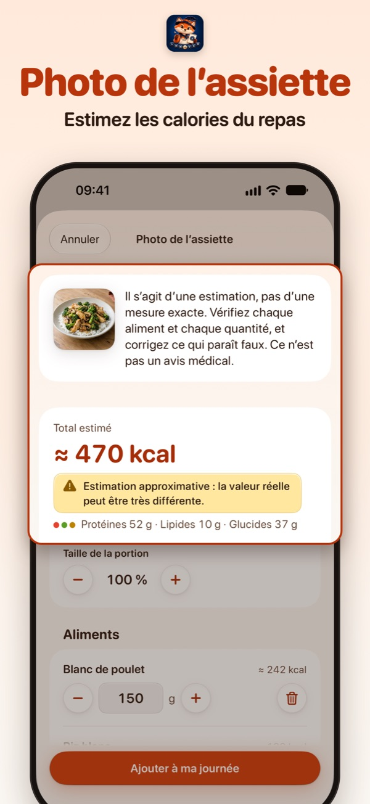
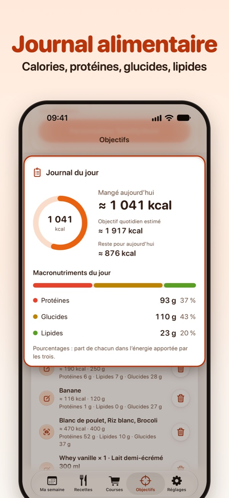
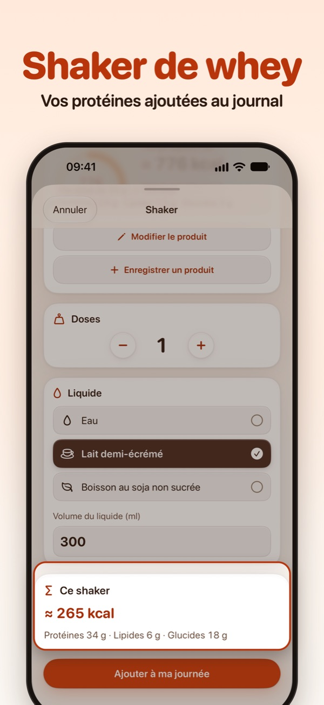
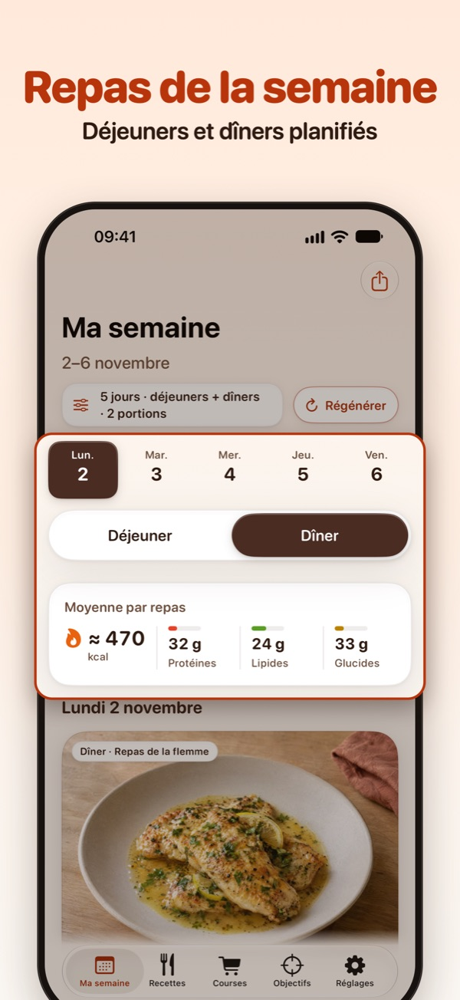
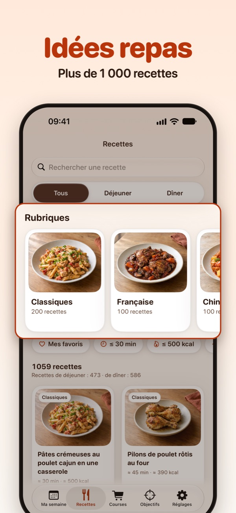
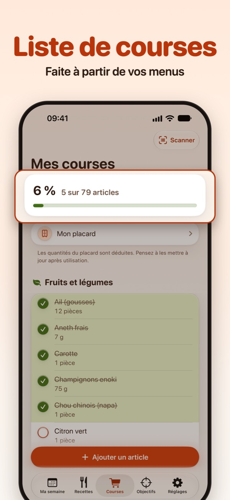
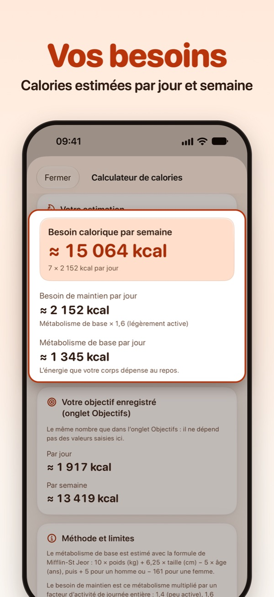
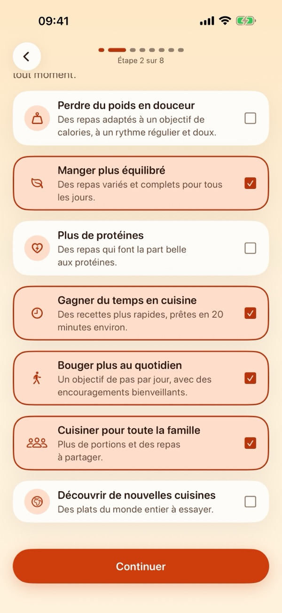
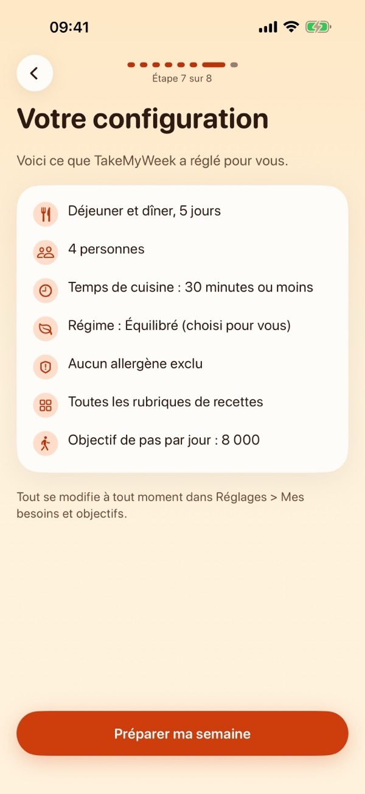
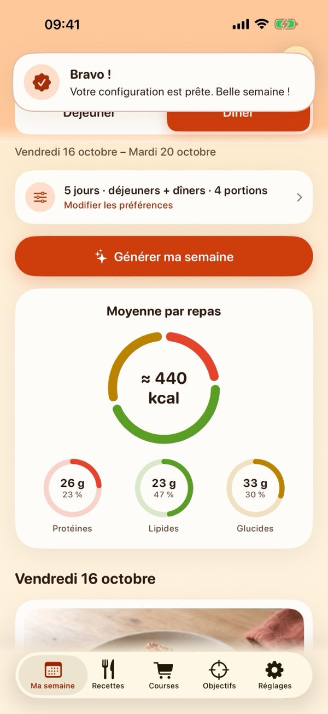
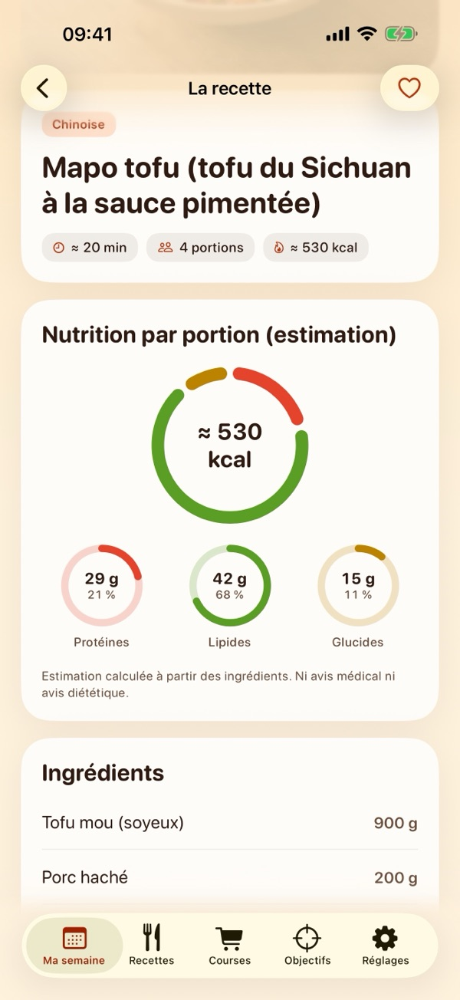
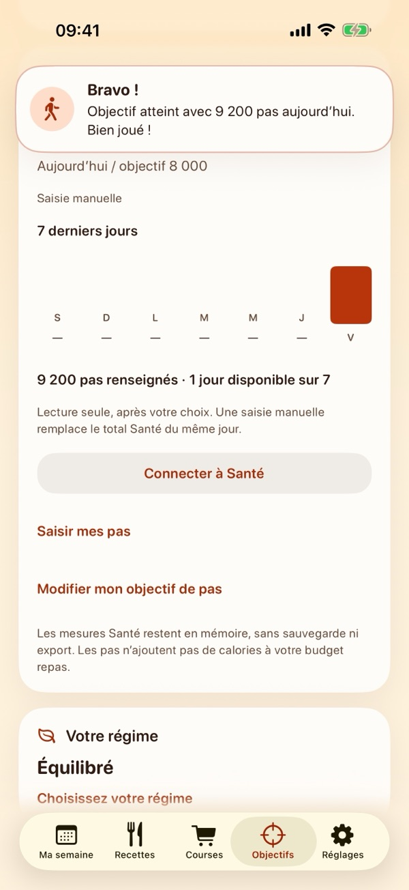
TakeMyWeek 2.6 en une minute
Politique de confidentialité
En vigueur le 13 novembre 2026 · s’applique à TakeMyWeek (anciennement Dinner Ideas, CookCart et Weekbite) pour iPhone, version 1.0 et suivantes.
Ce qui reste sur votre iPhone
Votre planning, vos préférences (nombre de jours, repas par jour, portions, temps maximal, régime, ingrédients et allergènes exclus), votre placard, vos favoris et vos coches de courses sont enregistrés dans un fichier de l’app sur votre appareil. Depuis la version 2.1, ce fichier contient aussi vos Objectifs : le profil que vous saisissez (âge, taille, sexe utilisé par la formule de calcul, niveau d’activité, rythme), votre journal de poids et votre poids cible, votre régime et les pas saisis à la main. Depuis la version 2.2, il contient aussi vos réponses aux questions « Mes besoins » : vos objectifs, votre foyer, vos repas, votre choix de régime, vos allergènes, votre temps de cuisine, vos rubriques de recettes et votre objectif de pas. Depuis la version 2.3, il contient aussi les articles que vous ajoutez à la main à vos courses. Depuis la version 2.5, il contient aussi votre journal du jour : pour chaque élément que vous ajoutez, sa date, son nom et ses calories, ainsi que sa quantité et ses macronutriments quand l’app les a. Depuis la version 2.6, les saisies gardent leurs protéines, glucides et lipides chaque fois que l’app les a ou que vous les indiquez, et le même fichier contient aussi les produits du shaker que vous enregistrez (10 au plus) : pour chacun, le nom que vous lui donnez, le poids de la dose et son énergie, ses protéines, glucides et lipides par dose, tels que vous les avez recopiés de l’étiquette. Un shaker ajouté est gardé dans le journal du jour comme toute autre saisie : son nom (produit, nombre de doses, liquide et volume), ses calories et ses macronutriments. Les derniers produits scannés sont gardés dans un cache local séparé (200 produits au plus, pendant 30 jours). Rien de tout cela ne quitte votre iPhone, sauf si vous choisissez de le partager ou de l’exporter.
Photos d’assiette et journal du jour (version 2.5 et suivantes)
L’analyse de la photo de l’assiette est une fonction Premium facultative (3 analyses sont offertes) qui s’exécute entièrement sur votre iPhone, avec l’intelligence artificielle intégrée à votre iPhone. Il faut un iPhone compatible, sous iOS 27 ou plus récent, avec cette fonction activée. La photo est lue en mémoire pour reconnaître les aliments et estimer les quantités et les calories. TakeMyWeek ne l’enregistre pas, ne l’ajoute pas à votre photothèque et ne l’envoie pas, ni à nous ni à personne d’autre : l’analyse ne demande aucune connexion internet et, si elle n’est pas disponible sur votre iPhone, la photo n’est envoyée nulle part à la place. Seul ce que vous choisissez d’ajouter à votre journal du jour est conservé, dans le fichier de l’app sur votre appareil, comme décrit plus haut ; l’app garde aussi, dans le trousseau de votre iPhone, le nombre d’analyses offertes que vous avez utilisées. Ce nombre ne fait pas partie de vos données : il n’est pas inclus dans la sauvegarde JSON que vous exportez, la réinitialisation des données ne l’efface pas, il n’est pas synchronisé avec iCloud ni jamais envoyé, et il peut subsister sur l’appareil après la suppression de l’app, afin qu’une réinstallation ne rende pas les analyses offertes. Si vous prenez la photo avec la caméra, iOS vous demande d’abord votre autorisation ; vous pouvez la retirer dans Réglages › Confidentialité et sécurité › Appareil photo. Le journal du jour n’est jamais utilisé pour la publicité ni pour le marketing.
Macros et shaker de whey (version 2.6 et suivantes)
Les totaux de macronutriments du jour et les shakers sont calculés entièrement sur votre iPhone, sans connexion internet ni autorisation. Les valeurs de l’eau, du lait demi-écrémé et de la boisson au soja non sucrée sont intégrées à l’app ; rien n’est recherché en ligne. Vos produits du shaker et votre journal du jour ne sont pas envoyés, ni à nous ni à personne, et ne servent jamais à la publicité ni au marketing. Supprimer un produit du shaker ne retire pas les shakers déjà ajoutés au journal ; supprimez ces saisies dans le journal si vous le souhaitez.
Calculateur de calories (version 2.5 et suivantes)
Le calculateur de calories s’exécute entièrement sur votre iPhone, sans connexion internet ni autorisation. Ce que vous y saisissez (âge, sexe utilisé par la formule, taille, poids, niveau d’activité et interrupteur d’orientation vers un professionnel de santé) ne sert qu’au calcul : cela n’est pas enregistré, ni ajouté au fichier de l’app, à votre profil d’Objectifs ou à la sauvegarde JSON, et pas envoyé à nous ni à personne d’autre. Il peut s’ouvrir prérempli avec le profil d’Objectifs que vous avez déjà saisi, et les modifications faites dans le calculateur ne changent jamais ce profil. Quand vous le fermez, ce que vous avez saisi n’est pas conservé.
Félicitations et encouragements (version 2.2 et suivantes)
Les messages sont choisis sur votre iPhone à partir des données ci-dessus, par exemple vos pas ou votre semaine enregistrée ; rien n’est envoyé. Ils s’affichent uniquement dans l’app, jamais en notification. Un petit fichier séparé de l’app retient seulement les félicitations déjà affichées et si l’invitation « Mes besoins » a été vue, pour ne rien répéter. Il ne contient rien d’autre, est exclu des sauvegardes iCloud et de l’appareil, ne figure jamais dans les exports et est effacé par Réglages › Réinitialiser les données. Les félicitations liées au poids n’apparaissent qu’avec un profil adulte, au-dessus du seuil de poids de santé et à un rythme doux ; aucun message ne félicite de manger moins.
Rappel hebdomadaire (version 2.3 et suivantes)
Si vous l’activez, TakeMyWeek demande à iOS l’autorisation d’envoyer des notifications et programme une notification locale par semaine, le jour et à l’heure de votre choix, pour vous rappeler de préparer votre semaine. Elle est programmée sur votre iPhone : rien n’est envoyé, ni à nous ni à personne, et elle ne contient aucune donnée personnelle. Le jour et l’heure sont gardés dans un petit fichier séparé de l’app, exclu des sauvegardes iCloud et de l’appareil et jamais exporté. Coupez-le dans les Réglages de l’app › Rappel hebdomadaire, ou dans Réglages › Notifications › TakeMyWeek de votre iPhone.
Export vers Rappels (version 2.3 et suivantes)
Quand vous touchez Exporter vers Rappels et autorisez l’accès, TakeMyWeek écrit les articles encore à acheter dans une liste nommée « Courses TakeMyWeek » de l’app Rappels d’Apple. iOS demande un accès complet à Rappels ; l’app crée seulement cette liste et ses articles, et l’export suivant ne remplace que les articles qu’elle a elle-même créés, dont elle garde les identifiants dans un petit fichier séparé (jamais exporté). Elle ne lit ni ne modifie vos autres rappels. La liste est ensuite gardée par l’app Rappels selon les réglages de votre compte Apple ; si vous la partagez, Apple la synchronise par iCloud avec les personnes invitées. Vous pouvez retirer l’accès dans Réglages › Confidentialité et sécurité › Rappels.
Santé (version 2.1 et suivantes)
Si vous touchez Connecter à Santé et l’autorisez, TakeMyWeek lit uniquement votre nombre de pas dans l’app Santé, en lecture seule : elle n’y écrit jamais rien. Les pas lus servent à afficher votre total du jour et votre objectif de pas ; ils restent sur votre iPhone, ne sont pas enregistrés dans le fichier de l’app, ne figurent pas dans les exports et ne sont jamais envoyés, ni à nous ni à personne. Les données de Santé ne servent jamais à la publicité ni au marketing. Vous pouvez retirer l’accès à tout moment dans Réglages › Confidentialité et sécurité › Santé › TakeMyWeek, ou depuis l’app Santé. Sans Santé, vous pouvez saisir vos pas à la main. Depuis la version 3.0, l’estimation des calories brûlées par vos pas est calculée sur votre iPhone à partir de vos pas et de votre profil (poids, taille) ; rien n’est écrit dans Santé ni envoyé.
Scan de codes-barres et Open Food Facts (version 2.1 et suivantes)
Le scan est une fonction Premium facultative (offerte 3 jours à partir de votre premier scan, depuis la version 3.0) ; c’est la seule fonction de TakeMyWeek qui se connecte à un service autre qu’Apple. Quand vous scannez ou saisissez un code-barres, l’app envoie uniquement ce code-barres à la base Open Food Facts (world.openfoodfacts.org), en HTTPS, pour obtenir le nom, la marque, la quantité et les valeurs nutritionnelles du produit et, depuis la version 3.0, son groupe de transformation, ses additifs, ses allergènes et traces et sa liste d’ingrédients. La version 3.0 demande davantage d’informations sur le produit, mais n’envoie rien de plus. Depuis la version 3.0, « Classements » et « Alternatives » envoient au même service (world.openfoodfacts.org ou, pour « Classements » quand cette adresse ne répond pas, search.openfoodfacts.org) une catégorie de produits et un pays (celui de la région de votre iPhone s’il figure dans la liste de l’app, sinon la France), sans identifiant, code-barres ni texte saisi ; les listes reçues restent 24 heures sur votre iPhone (gardées jusqu’à 7 jours pour être montrées hors connexion) et sont effacées par la réinitialisation. Les QR codes et codes Data Matrix sont lus sur votre iPhone : seul le code produit qu’ils contiennent est recherché, et l’app n’ouvre jamais une adresse trouvée dans un code. La requête ne contient ni compte, ni cookie, ni identifiant ; comme toute requête internet, elle révèle l’adresse IP de votre appareil, et elle indique le nom et la version de l’app. Votre planning, vos préférences, vos objectifs, votre poids et vos données de Santé ne sont jamais envoyés. L’image de la caméra sert uniquement, sur votre iPhone, à lire le code-barres ; elle n’est ni enregistrée ni envoyée. Depuis la version 3.0, la date de votre premier scan sans abonnement, qui ouvre les 3 jours de scan offert, et, pendant ces 3 jours, l’heure de la dernière utilisation de l’app sont conservées dans le trousseau de votre iPhone et ne sont jamais envoyées : la réinitialisation ne les remet pas à zéro, et une réinstallation de l’app non plus tant que cette information y est conservée. La politique de confidentialité d’Open Food Facts s’applique au traitement de ses requêtes. Les données produit viennent des contributeurs d’Open Food Facts et sont disponibles sous licence Open Database License (ODbL).
Quand des données quittent votre appareil, c’est parce que vous l’avez demandé
- Partage et export : quand vous partagez votre planning, vos courses ou, depuis la version 2.8, une recette ou le résultat d’une photo d’assiette, ou exportez une sauvegarde, iOS transmet le contenu à l’app ou à l’endroit que vous choisissez. Le texte partagé d’une recette contient son nom, son temps et ses calories par portion ; celui d’une assiette, le total estimé et les macros, jamais la photo ; depuis la version 2.8, chaque texte partagé se termine par le lien de TakeMyWeek sur l’App Store. Une sauvegarde JSON contient votre planning, vos préférences, vos favoris, votre placard, depuis la version 2.1 votre profil d’Objectifs, votre régime, votre journal de poids et vos pas saisis à la main, depuis la version 2.2 vos réponses « Mes besoins », depuis la version 2.3 les articles ajoutés à vos courses, depuis la version 2.5 votre journal du jour, et depuis la version 2.6 vos produits du shaker ; jamais les pas lus dans Santé. Les sauvegardes ne sont pas chiffrées par TakeMyWeek : rangez-les en lieu sûr.
- Sauvegardes iCloud ou de l’appareil : comme les autres données d’app, le fichier peut être inclus dans les sauvegardes de votre iPhone selon les réglages de votre compte Apple.
- Scan de codes-barres : uniquement le code-barres, comme indiqué ci-dessus.
- Export vers Rappels : les articles encore à acheter, écrits dans une liste de l’app Rappels d’Apple, comme indiqué ci-dessus.
- Liens : un lien touché dans l’app s’ouvre dans votre navigateur ou l’App Store, où la politique de confidentialité du site s’applique.
Achats et abonnements
TakeMyWeek Premium s’achète dans l’App Store d’Apple. Apple traite le paiement et gère l’abonnement selon sa propre politique de confidentialité. Nous ne recevons jamais votre nom, votre compte Apple ni vos données de paiement. L’app demande seulement au système d’achat d’Apple, sur votre iPhone, si un abonnement est actif. Pour l’offre de bienvenue (version 2.1 et suivantes), l’app enregistre dans le trousseau de votre iPhone l’heure de sa première ouverture et si l’offre s’applique à cette installation. Cet élément reste sur cet appareil, n’est pas synchronisé avec iCloud et n’est jamais envoyé ; il peut subsister après la suppression de l’app, afin qu’une réinstallation ne relance pas le délai de 48 heures.
Réseau
Le catalogue de recettes est intégré à l’app, et l’app ne nous envoie rien. Elle contacte l’App Store pour afficher les offres d’abonnement et vérifier ou restaurer un achat, et, seulement quand vous utilisez le scan, Open Food Facts comme décrit ci-dessus. Tout le reste fonctionne hors connexion, y compris l’analyse de la photo de l’assiette, qui s’exécute sur votre iPhone.
Enfants
TakeMyWeek ne collecte aucune information, auprès de personne, enfants compris. L’app peut être utilisée dès 7 ans. Pour les moins de 18 ans, elle ne propose jamais d’objectif de perte de poids ni de déficit calorique : le calculateur n’affiche que le besoin de maintien estimé.
Informations de santé
Les calories, les macronutriments, les régimes, l’objectif calorique et l’objectif de pas sont des estimations et des informations générales, pas un avis médical ou diététique. Les calories estimées à partir d’une photo d’assiette sont approximatives et peuvent être très éloignées de la valeur réelle : l’analyse peut se tromper sur les plats et les portions et ne voit souvent pas l’huile, le beurre, la crème ni les sauces ; vérifiez donc le résultat et ajoutez ce qui manque. Les totaux de macronutriments du jour additionnent les valeurs de vos saisies, et un shaker est calculé d’après les valeurs d’étiquette que vous avez saisies et des valeurs moyennes pour le liquide : ce sont aussi des estimations. L’objectif calorique repose sur une formule publiée, avec des garde-fous (apport minimal quotidien, rythme doux ou modéré, aucune prise de poids visée) ; il ne peut pas prédire vos résultats. Le calculateur de calories repose lui aussi sur une formule publiée (Mifflin-St Jeor, avec des facteurs d’activité) : ses chiffres sont des estimations qui varient d’une personne à l’autre. Si vous êtes enceinte ou allaitez, avez une maladie, ou avez ou avez eu un trouble du comportement alimentaire, parlez-en à un professionnel de santé avant de changer d’alimentation ; si vous l’indiquez dans votre profil, l’app ne calcule pas de déficit calorique. Les filtres de régime et d’allergènes reposent sur les ingrédients de notre catalogue : vérifiez toujours les emballages (allergènes, contaminations croisées).
Suppression
Les données restent sur votre iPhone jusqu’à ce que vous les remplaciez ou supprimiez l’app. Réglages › Réinitialiser les données efface les données actives (planning, préférences, favoris, placard, coches de courses, Objectifs, réponses « Mes besoins », journal du jour (depuis la version 2.5), produits du shaker (depuis la version 2.6), liste des félicitations déjà affichées, cache des produits scannés et, depuis la version 2.3, rappel hebdomadaire avec sa notification programmée et trace des articles exportés), mais conserve une copie de récupération sur l’appareil (une copie est créée à chaque réinitialisation ou import d’une sauvegarde ; depuis la version 2.9, l’app ne garde que les 2 plus récentes) ; supprimez l’app (plutôt que de la décharger) pour effacer tout ce qu’elle a enregistré. L’élément de l’offre de bienvenue, le compteur des analyses offertes et les dates du scan offert peuvent rester dans le trousseau, comme expliqué plus haut. Vos pas restent dans l’app Santé, que vous contrôlez. Les articles déjà exportés vers Rappels y restent jusqu’à ce que vous les supprimiez dans Rappels. Les fichiers de sauvegarde exportés se suppriment séparément. Comme nous ne détenons rien sur aucun serveur, il n’y a rien à nous demander.
Modifications
Si cette politique change, la nouvelle version sera publiée sur cette page avec sa date d’effet. Version en vigueur : 11 novembre 2026.
Conditions d’utilisation
En vigueur le 13 novembre 2026
TakeMyWeek est concédée sous le contrat de licence standard d’Apple.
TakeMyWeek Premium
Abonnement à renouvellement automatique, à la semaine (avec essai gratuit de 3 jours pour les nouveaux abonnés éligibles, quand il est proposé), au mois, pour 3 mois ou à l’année. Depuis la version 2.4, l’abonnement annuel ne comprend plus d’essai gratuit ; si vous êtes déjà abonné, votre formule et votre prix restent les mêmes tant que vous ne les changez pas. Les prix sont affichés dans l’app avant l’achat et dépendent de votre pays. Le paiement est prélevé sur votre compte Apple à la confirmation de l’achat ; l’abonnement se renouvelle automatiquement, sauf résiliation au moins 24 heures avant la fin de la période en cours. Vous pouvez le gérer ou le résilier à tout moment dans les réglages de votre compte App Store ; supprimer l’app ne résilie pas l’abonnement.
Offre de bienvenue (version 2.1 et suivantes)
Sur une nouvelle installation de la version 2.1 ou d’une version ultérieure, l’onglet Objectifs (et, depuis la version 2.3, le haut de l’écran d’offre) peut proposer une offre de bienvenue pendant les 48 heures qui suivent la première ouverture de l’app sur cet iPhone. Elle n’apparaît pas sur un iPhone qui contenait déjà des données de l’app, et disparaît à la fin des 48 heures ou si vous êtes déjà abonné. Il s’agit d’un abonnement annuel dont la première année est payée d’avance, en une seule fois, à un prix de lancement réduit ; il se renouvelle ensuite au prix annuel habituel affiché avant l’achat, sauf résiliation au moins 24 heures avant la fin de la première année. Apple décide de l’éligibilité : une offre de lancement ne peut servir qu’une fois par groupe d’abonnements ; elle peut donc être indisponible si vous avez déjà profité d’un essai gratuit ou d’une autre offre de lancement de TakeMyWeek Premium.
Recettes et nutrition
Les durées, les calories et les macronutriments sont des estimations calculées à partir des ingrédients ; ce n’est pas un avis médical ou diététique. Les recettes n’ont pas toutes été testées en cuisine. Les photos des recettes sont des illustrations. Vérifiez toujours les allergènes sur les emballages.
Objectifs, pas et données produit
Les objectifs, l’objectif calorique, l’objectif de pas et les résultats du calculateur de calories sont des estimations générales ; ils ne remplacent pas l’avis d’un professionnel de santé. Les informations produit du scan viennent de la base ouverte et collaborative Open Food Facts (ODbL) ; elles peuvent être incomplètes ou dépassées : vérifiez l’emballage.
Photos d’assiette et journal du jour (version 2.5 et suivantes)
L’analyse de la photo de l’assiette fait partie de Premium : les 3 premières analyses sont offertes, les suivantes demandent un abonnement Premium actif. Elle demande un iPhone compatible avec l’intelligence artificielle intégrée, sous iOS 27 ou plus récent ; là où elle n’est pas disponible, l’app l’indique et tout le reste fonctionne comme avant. Les calories estimées à partir d’une photo sont produites sur votre iPhone par un modèle automatique : ce sont des estimations approximatives, qui peuvent être fausses ou très éloignées de la valeur réelle, et elles ne constituent pas un avis médical ou diététique. Le journal du jour est un relevé personnel conservé sur votre appareil.
Le scan fait partie de Premium. Depuis la version 3.0, il est offert pendant 3 jours (72 heures) à partir de votre premier scan sans abonnement ; pendant ces jours, l’accueil du scan indique le temps restant, puis le scan affiche l’écran d’offre. « Cocher l’article » et « Ajouter au placard » restent dans Premium pendant les 3 jours. Les abonnés ne voient aucun changement. Cette règle est inscrite dans l’app et ne dépend d’aucun réglage à distance.
Santé et nutrition : ce qu’il faut savoir
TakeMyWeek aide à organiser vos repas et à suivre des repères. Ses chiffres sont des estimations, pas des mesures, et rien dans l’app n’est un avis médical ou diététique. En cas de doute, demandez l’avis d’un professionnel de santé avant de changer votre alimentation.
- Des estimations. Les calories des recettes sont calculées à partir des ingrédients ; celles du journal du jour, du shaker et du scan, à partir des valeurs déclarées (pour 100 g ou 100 ml), de votre étiquette et de valeurs moyennes. Les durées des recettes sont indicatives, les temps de cuisson ne changent pas avec les portions, et toutes les recettes n’ont pas encore été testées en cuisine.
- Photo de l’assiette. L’analyse estime les aliments et les quantités d’après une seule photo : la valeur réelle peut être très différente. Vérifiez chaque aliment et chaque quantité, et corrigez ce qui paraît faux.
- Allergènes et étiquettes. Les filtres des recettes et les régimes ne garantissent pas l’absence d’allergènes ni de traces : « sans gluten » signifie sans allergène gluten déclaré, et « sans sucre ajouté » ne veut pas dire sans sucre. Les informations du scan viennent d’une base collaborative et de l’étiquette déclarée ; elles peuvent comporter des erreurs. Vérifiez toujours l’étiquette de chaque emballage et les risques de contamination croisée. Les recettes et les filtres ne sont ni un régime médical ni un plan nutritionnel validé.
- Grossesse, allaitement, maladie, troubles du comportement alimentaire. Dans ces situations, demandez l’avis d’un professionnel de santé, qui peut vous aider à fixer un repère adapté.
- Garde-fous (adultes). À partir de 18 ans, si le poids indiqué est sous le seuil de prudence de l’app pour votre taille (dans le calculateur : indice de masse corporelle inférieur à 18,5), le besoin de maintien reste affiché mais aucun déficit n’est proposé ; au-delà des garde-fous, l’adaptation des repas est désactivée. L’objectif calorique ne descend jamais sous 1 200 kcal pour une femme et 1 500 kcal pour un homme : ce minimum n’est ni un repère de maintien ni un programme de perte de poids, et il ne garantit pas qu’un déficit vous convienne. Dans ces cas, l’avis d’un professionnel de santé est conseillé.
- Enfants et adolescents. L’app peut être utilisée dès 7 ans. Pour les moins de 18 ans, elle ne propose jamais d’objectif de perte de poids ni de déficit calorique : seulement une estimation du besoin de maintien. La formule du calculateur a été établie chez des adultes (19 à 78 ans) : chez un enfant, le chiffre est encore plus approximatif. Pour toute question sur le poids ou l’alimentation d’un enfant ou d’un adolescent, consultez un professionnel de santé.
- Calories des pas. C’est une estimation (marche sur terrain plat, allure ordinaire) ; elle est affichée mais ne s’ajoute jamais à votre objectif calorique.
Assistance
Nous lisons chaque message et répondons généralement en quelques jours.
Calories, allergènes, situations particulières, enfants : voir Santé et nutrition : ce qu’il faut savoir.
balustreyonni@gmail.com
- Comment fonctionne la photo de l’assiette ?
- Prenez votre assiette en photo : l’intelligence artificielle intégrée à votre iPhone reconnaît les aliments et estime les quantités et les calories, sur l’appareil. Ajoutez le résultat à votre journal du jour. 3 analyses sont offertes ; ensuite, l’analyse de la photo de l’assiette fait partie de Premium. La photo n’est ni enregistrée ni envoyée. Le résultat est une estimation approximative : elle peut se tromper sur les plats et les portions, et l’huile, le beurre, la crème et les sauces sont souvent invisibles sur une photo. Vérifiez chaque aliment et chaque quantité, et ajoutez ce qui manque avec « Ajouter un aliment ».
- La photo de l’assiette n’est pas disponible sur mon iPhone.
- Elle demande un iPhone compatible avec l’intelligence artificielle intégrée, sous iOS 27 ou plus récent, avec cette fonction activée dans les Réglages et son modèle téléchargé (s’il est encore en préparation, réessayez plus tard). Sur les autres iPhone, l’app indique que la fonction n’est pas disponible et tout le reste fonctionne comme avant. La photo n’est jamais envoyée à un serveur à la place.
- Pourquoi les calories d’après une photo peuvent-elles être fausses ?
- L’analyse devine les aliments et leurs quantités à partir d’une seule photo. Elle ne peut rien peser et ne voit souvent pas ce qui est caché dans un plat : huile, beurre, crème, sauces. Elle peut aussi nommer un aliment à tort ou proposer une quantité trop forte ou trop faible. TakeMyWeek n’affiche donc aucune fourchette de calories, qui laisserait croire à une précision que l’analyse n’a pas : sous le total, une ligne indique « Estimation approximative : la valeur réelle peut être très différente. » Une note sous la liste des aliments rappelle que l’huile, le beurre, la crème et les sauces sont souvent invisibles sur une photo : ajoutez-les avec « Ajouter un aliment » (ils sont dans la liste d’aliments). Sous un aliment, « Estimation incertaine : à vérifier ou à corriger. » signifie que l’analyse a annoncé une confiance faible, ou que l’aliment ne figure pas dans la liste d’aliments de l’app, donc que ses calories sont l’estimation de l’analyse, ramenée dans une plage plausible pour sa catégorie : vérifiez-le ou corrigez-le. Une ligne sans cette mention n’est pas forcément juste. Si un message indique qu’une quantité a été réduite, elle a été ramenée aux limites de l’app : vérifiez-la. La note indiquant que la liste est limitée aux aliments les plus visibles n’apparaît que lorsque la liste a été coupée à 8 aliments (rare : l’analyse renvoie 8 aliments au plus). Quand la liste est pleine (8 aliments), une note indique d’en retirer un pour en ajouter un autre.
- Qu’est-ce qui change dans la version 3.0 ?
- L’app adopte un nouveau design sombre, partout, avec les mêmes onglets. Le scan affiche les valeurs du produit entier, lit aussi les QR codes qui portent un code produit et détaille, quand c’est renseigné, additifs, allergènes et traces, ingrédients et niveau de transformation. Deux listes, « À surveiller » et « Points forts », résument les nutriments, avec leurs seuils et leurs sources dans « Méthode ». « Alternatives » et « Classements » comparent les produits d’une même catégorie. Dans Objectifs, la carte « Vos pas » estime les calories brûlées par vos pas. Vos données personnelles restent sur votre iPhone. L’app est aussi plus simple : dans Ma semaine, Verrouiller et Remplacer sont sur le plat affiché en grand ; dans Courses, Partager (en haut) réunit « Partager la liste en texte » et « Exporter vers Rappels » ; Réglages › Préférences des repas réunit les rubriques incluses dans le tirage, le plafond de calories par portion et l’alimentation ; Réglages › Allergènes et exclusions ouvre directement les allergènes ; dans Objectifs, Scanner un aliment est l’une des entrées du journal du jour, et le calculateur, votre régime et vos besoins sont des lignes ; l’écran d’offre montre d’emblée toutes les fonctions Premium. Le scan est offert pendant 3 jours à partir de votre premier scan, puis fait partie de Premium.
- Qu’est-ce qui change dans la version 2.9 ?
- L’interface est plus nette et plus tactile : cartes et boutons en relief qui réagissent sous le doigt, retours haptiques aux moments qui comptent. Dans Ma semaine, la photo du plat s’affiche dès l’ouverture. La recette d’un dîner « Un repas, deux fois » affiche ses ingrédients pour toutes les portions à cuisiner. L’allergène œuf est signalé pour les nouilles lo mein, et les portions de trois recettes très copieuses sont revues. Dans Réglages, la réinitialisation indique tout ce qui est effacé et l’app ne garde plus que les 2 copies de récupération les plus récentes ; si l’accès à Rappels est refusé, un lien ouvre les Réglages. Les accords des unités et les très grandes tailles de texte sont corrigés. Vos données restent toujours sur votre iPhone.
- Qu’est-ce qui change dans la version 2.6 ?
- Protéines, glucides et lipides sont comptés pour chaque saisie du journal et affichés à côté des calories du jour, avec la part de chacun ; vous pouvez enregistrer votre poudre de whey et ajouter un shaker en un geste ; l’app a un nouveau design en relief et une nouvelle icône ; la recherche des recettes, les menus au toucher long, les glissements et les feuilles la rendent plus simple ; les grandes tailles de texte sont prises en charge sur plus d’écrans et « Réduire les animations » est respecté partout. Vos données restent toujours sur votre iPhone.
- Comment ajouter un shaker de whey ?
- Dans Objectifs, dans le Journal du jour, touchez « Ajouter un shaker ». La première fois, touchez « Enregistrer un produit » et recopiez les valeurs par dose de l’étiquette : nom du produit, poids de la dose, énergie, protéines, glucides et lipides (l’app ne propose aucune valeur par défaut, et vous pouvez enregistrer jusqu’à 10 produits). Choisissez ensuite le produit, le nombre de doses (demi-doses comprises), le liquide (eau, lait demi-écrémé ou boisson au soja non sucrée) et son volume : le shaker rejoint le journal du jour avec ses calories et ses macros. Si l’app refuse les valeurs, vérifiez l’étiquette : protéines, glucides et lipides ne peuvent pas peser ensemble plus que la dose, et l’énergie doit correspondre à son poids.
- Pourquoi les macros du jour sont-elles indiquées comme partielles ?
- Au moins une saisie du jour n’indique pas ses protéines, glucides ou lipides, par exemple une saisie faite avec une version précédente, ou une saisie à la main où vous n’avez indiqué que les calories. Les valeurs connues sont additionnées et l’app indique combien de saisies n’ont pas les leurs ; elle ne les compte jamais pour 0 en silence. Les pourcentages sont la part de chacun dans l’énergie apportée par les trois.
- Pourquoi la saisie à la main refuse-t-elle mes macros ?
- Protéines, glucides et lipides sont facultatifs dans une saisie à la main. Quand l’énergie qu’ils apportent (4 kcal par gramme de protéines ou de glucides, 9 par gramme de lipides) dépasse nettement les calories saisies, l’app affiche l’énergie qu’ils apportent et vous demande de vérifier les chiffres : c’est en général une faute de frappe.
- Qu’est-ce qui change dans la version 2.5.1 ?
- La version 2.5.1 modifie le résultat de la photo de l’assiette et corrige quelques écrans. Le calcul des calories ne change pas. Photo de l’assiette : la fourchette de calories est remplacée par une ligne d’estimation approximative sans chiffre ; un rappel sur l’huile, le beurre, la crème et les sauces apparaît sous la liste des aliments ; un message distinct apparaît quand une quantité a été réduite ; la mention « Estimation incertaine » apparaît aussi pour les aliments qui ne figurent pas dans la liste d’aliments de l’app ; pour un tel aliment, protéines, lipides et glucides ne dépassent plus 100 g pour 100 g (les calories ne changent pas). Écrans : dans le scan de code-barres, dans la saisie à la main du journal et quand vous saisissez votre poids (« Continuer » dans « Votre objectif », « Étape suivante » dans les questions de départ), les champs et les boutons restent accessibles au-dessus du clavier, et l’interrupteur « Je suis dans l’une de ces situations » (calculateur et Objectifs) répond aussi quand vous touchez son libellé.
- Où est conservé mon journal du jour ?
- Sur votre iPhone uniquement, dans le fichier de l’app avec le reste de vos données, comme vos produits du shaker (version 2.6). Ils font partie d’une sauvegarde JSON si vous en exportez une, et Réglages › Réinitialiser les données les efface.
- Comment modifier mes besoins et objectifs ?
- Allez dans Réglages › Mes besoins et objectifs : les questions s’ouvrent préremplies avec vos réponses et réglages actuels. L’enregistrement met à jour vos réglages et objectifs ; votre semaine enregistrée reste telle quelle jusqu’à ce que vous en prépariez une nouvelle. Changer le nombre de portions fait partie de Premium, comme dans les préférences de la semaine.
- Que se passe-t-il si je ferme l’écran d’offre ?
- Rien n’est facturé. Depuis la version 2.4, l’écran d’offre s’ouvre une fois, juste après votre première semaine offerte ; fermez-le avec la croix pour continuer avec l’accès limité : vous gardez votre semaine enregistrée, ses recettes et votre liste de courses, et vous pouvez rouvrir les offres dans Réglages › Abonnement.
- Les félicitations envoient-elles des notifications ?
- Non. Elles s’affichent uniquement dans l’app, quelques secondes ou jusqu’à ce que vous les touchiez, et chacune une seule fois. La seule notification que TakeMyWeek peut envoyer est le rappel hebdomadaire facultatif (version 2.3), si vous l’activez.
- Comment partager la liste de courses avec mon foyer ?
- Dans Courses, touchez Partager (en haut), puis Exporter vers Rappels : les articles encore à acheter partent dans une liste « Courses TakeMyWeek » de l’app Rappels. Partagez cette liste depuis Rappels, et chacun voit les coches. Un nouvel export remplace les articles ajoutés auparavant par TakeMyWeek. Depuis le même bouton Partager, vous pouvez aussi partager la liste en texte, classée par rayon, et ajouter vos propres articles avec Ajouter un article. Si vous avez refusé l’accès à Rappels, l’app affiche, depuis la version 2.9, un lien vers les Réglages pour l’autoriser.
- Que contient ce que je partage ?
- Ma semaine : les repas de la semaine (jour, déjeuner ou dîner, recette, portions). Liste de courses : les articles encore à acheter, classés par rayon, y compris ceux que vous avez ajoutés à la main. Recette (version 2.8 et suivantes) : le nom, le temps et les calories par portion, jamais les ingrédients ni les étapes. Photo de l’assiette (version 2.8 et suivantes) : le total estimé et les macros ; la photo n’est jamais partagée. Depuis la version 2.8, chaque texte se termine par le lien de TakeMyWeek sur l’App Store. L’app n’envoie rien elle-même : c’est vous qui choisissez la destination dans la feuille de partage d’iOS.
- Qu’est-ce que « Un repas, deux fois » ?
- Dans les préférences de la semaine, avec déjeuners et dîners, activez Un repas, deux fois : chaque dîner devient le déjeuner du lendemain. La carte du dîner indique combien de portions cuisiner ; les courses les comptent une seule fois. Vous pouvez toujours remplacer un déjeuner « reste » par un autre déjeuner. Depuis la version 2.9, la recette de ce dîner, ouverte depuis Ma semaine, Recettes ou Objectifs, affiche ses ingrédients pour toutes les portions à cuisiner, et le dit au-dessus de la liste : rien à recalculer.
- « Pas assez de recettes compatibles » : pourquoi ?
- Vos filtres (temps maximal, régime, ingrédients ou allergènes exclus) laissent moins de recettes que de repas dans votre semaine. L’app indique s’il manque des déjeuners ou des dîners et n’assouplit jamais vos filtres d’elle-même : augmentez le temps maximal, passez à 5 jours, planifiez seulement les dîners ou retirez une exclusion. Quand elle règle tout selon vos besoins, elle n’ajuste que ce qu’elle a choisi pour vous (par exemple le régime ou le temps de cuisine) et le dit dans le récapitulatif ; vos allergènes, un régime que vous avez choisi et vos rubriques ne sont jamais modifiés.
- Comment planifier les déjeuners en plus des dîners ?
- Dans les préférences de la semaine, choisissez déjeuners et dîners. La semaine a alors un onglet Déjeuner et un onglet Dîner ; les repas verrouillés restent en place quand vous générez de nouveau.
- Comment fonctionnent les Objectifs ?
- Ouvrez l’onglet Objectifs, saisissez votre profil, votre poids actuel, votre poids cible et votre rythme. L’app estime un objectif calorique quotidien avec des garde-fous et vous laisse choisir l’un des dix régimes pour vos prochains repas. Votre semaine en cours reste telle quelle jusqu’à la prochaine génération.
- Comment fonctionne le calculateur de calories ?
- Ouvrez l’onglet Objectifs et touchez la carte Calculateur de calories, sous le Journal du jour. Saisissez votre âge, le sexe utilisé par la formule, votre taille en cm, votre poids en kg et votre niveau d’activité : il affiche une estimation de votre métabolisme de base (l’énergie que votre corps dépense au repos) et des calories pour maintenir votre poids par jour, puis par semaine (7 fois le nombre du jour). Il est gratuit ; pour les moins de 18 ans, il n’affiche que le besoin de maintien, jamais de déficit. Il applique la formule de Mifflin-St Jeor et des facteurs d’activité de 1,4 à 2,0 ; le chiffre réel varie d’une personne à l’autre, c’est donc une estimation, pas un avis médical. Si vous êtes enceinte ou allaitez, avez un trouble du comportement alimentaire ou une maladie, activez l’interrupteur d’orientation vers un professionnel de santé : aucun nombre n’est affiché, et c’est à un professionnel de santé qu’il faut demander conseil.
- Ce que je saisis dans le calculateur est-il enregistré ?
- Non. Cela reste sur votre iPhone, n’est pas enregistré, ne fait pas partie de la sauvegarde JSON et n’est jamais envoyé. Il peut s’ouvrir prérempli avec votre profil d’Objectifs, que le calculateur ne modifie jamais. Si vous avez enregistré un objectif de poids dans Objectifs, le calculateur affiche aussi cet objectif tel qu’il y est enregistré.
- Comment connecter ou déconnecter mes pas ?
- Dans Objectifs, touchez Connecter à Santé et autorisez la lecture du nombre de pas. Pour arrêter : Réglages › Confidentialité et sécurité › Santé › TakeMyWeek, ou l’app Santé. Sans données ou sans accès, vous pouvez saisir vos pas à la main.
- Le scan ne trouve pas mon produit.
- Le scan demande une connexion internet ; depuis la version 3.0, il est offert pendant 3 jours à partir de votre premier scan, puis demande un abonnement TakeMyWeek Premium. Si un produit n’est pas dans Open Food Facts, vérifiez le code-barres ou essayez un autre produit ; vous pouvez aussi saisir les chiffres du code.
- Le scan a trouvé un autre produit.
- Touchez « Ce n’est pas le bon produit ? » pour revenir à la saisie du code-barres, scanner à nouveau ou corriger les chiffres. Si le code est juste, les données du produit peuvent être incomplètes ou erronées dans Open Food Facts : fiez-vous à l’emballage.
- Pourquoi le scan affiche-t-il les valeurs du produit entier ?
- Depuis la version 3.0, quand la quantité du produit est connue (par exemple 300 g), TakeMyWeek calcule les valeurs pour tout le produit. Les valeurs pour 100 g ou 100 ml restent affichées sur une ligne, en repère. Vous pouvez choisir une autre portion (celle indiquée sur le produit, 100 g ou 100 ml). Si la quantité n’est pas renseignée, ou pas dans l’unité des valeurs nutritionnelles, l’app l’indique et affiche les valeurs pour 100 g ou 100 ml : saisissez la quantité indiquée sur l’emballage pour obtenir le total.
- Que signifient les informations du produit ?
- Elles viennent d’Open Food Facts et ne s’affichent que si elles y sont renseignées. Le groupe NOVA (1 à 4) classe le degré de transformation, pas la qualité nutritionnelle. Les additifs sont ceux repérés dans la liste d’ingrédients, avec leur code E, leur nom et leur fonction (conservateur, colorant…) : la fonction indique leur rôle dans la recette, pas une évaluation sanitaire, et TakeMyWeek ne donne aucune note aux additifs ni aux produits. Depuis la version 3.0, seuls les additifs pour lesquels l’Autorité européenne de sécurité des aliments (EFSA) a publié une évaluation de l’exposition portent une ligne qui la cite, avec un lien vers son avis. Si la liste d’ingrédients n’est pas complète, l’app écrit « non déterminés » ou « non renseignés », jamais « aucun ». Vérifiez toujours les allergènes sur l’emballage. Un produit enregistré hors ligne n’a pas ces détails : scannez-le à nouveau une fois connecté.
- Le scan lit-il les QR codes ?
- Oui, depuis la version 3.0, quand le QR code ou le code Data Matrix porte un code produit (norme GS1). Un QR code sans code produit, publicitaire par exemple, affiche « Ce QR code ne contient pas de code produit : scannez le code-barres. » ; l’app n’ouvre jamais l’adresse qu’il contient.
- Que signifient « À surveiller » et « Points forts » ?
- Ce sont deux listes repliées sous les valeurs du produit. Les niveaux faible, modéré ou élevé des sucres, du sel, des acides gras saturés et des lipides sont ceux publiés par Open Food Facts, pour 100 g ou 100 ml ; les fibres, les protéines et la faible valeur énergétique suivent les seuils des allégations nutritionnelles du règlement européen (CE) n° 1924/2006 ; la transformation est le groupe NOVA. L’écran « Méthode », en bas du résultat, donne chaque seuil et sa source. Ce sont des informations, ni une note ni un avis médical.
- Comment sont choisies les alternatives et les classements ?
- « Alternatives » propose jusqu’à 5 produits de la même catégorie, parmi les plus scannés dans votre pays, qui font mieux sur au moins un point « à surveiller » du produit scanné et pas moins bien ailleurs ; chaque ligne donne l’écart en chiffres (par exemple « −20 g de sucres pour 100 g »). S’il n’y en a pas, l’app l’écrit. « Classements », sur le premier écran du scanner, trie jusqu’à 20 produits d’une catégorie selon un critère : moins de sucres, de sel ou d’acides gras saturés, plus de protéines ou de fibres, moins transformés. Ces listes demandent une connexion et l’abonnement Premium ; si la base ne répond pas, touchez « Réessayer ».
- Comment sont estimées les calories brûlées par mes pas ?
- Depuis la version 3.0, la carte « Vos pas » d’Objectifs affiche « ≈ … kcal brûlées » pour le jour et pour les 7 derniers jours. L’estimation part de vos pas, de votre taille (pour la longueur du pas) et de votre poids : 0,5 kcal par kg et par km marché, au-dessus de la dépense de repos (équation de marche de l’American College of Sports Medicine), arrondie à la dizaine. Elle n’apparaît que si votre profil d’Objectifs est rempli et ne s’ajoute pas à votre objectif calorique, qui tient déjà compte de votre niveau d’activité.
- Je ne vois pas l’offre de bienvenue.
- Elle apparaît dans l’onglet Objectifs et, depuis la version 2.3, en tête de l’écran d’offre, seulement sur une nouvelle installation de la version 2.1 ou d’une version ultérieure, pendant les 48 heures qui suivent la première ouverture, si Apple confirme que votre compte y a droit et que vous n’êtes pas déjà abonné. Depuis la version 2.9, elle tient sur une ligne dans Objectifs : touchez-la pour ouvrir l’écran d’offre.
- Comment gérer, résilier ou restaurer mon abonnement ?
- Gérez-le ou résiliez-le dans l’app Réglages de votre iPhone : touchez votre nom, puis Abonnements. Sur un nouvel appareil, ouvrez TakeMyWeek, allez dans Réglages › Abonnement et touchez Restaurer les achats.
- Comment utiliser un code d’offre ?
- Depuis la version 2.8, ouvrez Réglages › Abonnement › Utiliser un code. La fenêtre d’Apple s’ouvre : saisissez le code, puis confirmez. Votre accès Premium s’active dès que l’App Store a validé le code. Le code n’est ni lu ni gardé par TakeMyWeek.
- Que puis-je faire sans abonnement ?
- Parcourir les rubriques, relire votre semaine enregistrée, ses recettes et vos courses, ajouter vos propres articles, partager la liste ou l’exporter vers Rappels, utiliser les Objectifs, le calculateur de calories et les pas, et essayer 3 fois l’analyse de la photo de l’assiette. Créer ou modifier une semaine, ouvrir les autres recettes, les filtres avancés, le placard, le scan et les analyses de photo d’assiette suivantes font partie de Premium.
- Comment transférer mes données sur un nouvel iPhone ?
- Réglages › Exporter une sauvegarde JSON crée un fichier ; ouvrez-le avec Réglages › Importer une sauvegarde JSON sur le nouvel appareil. Votre journal du jour et, depuis la version 2.6, vos produits du shaker sont dans la sauvegarde. Les pas de Santé ne sont pas dans la sauvegarde : reconnectez Santé sur le nouvel iPhone.